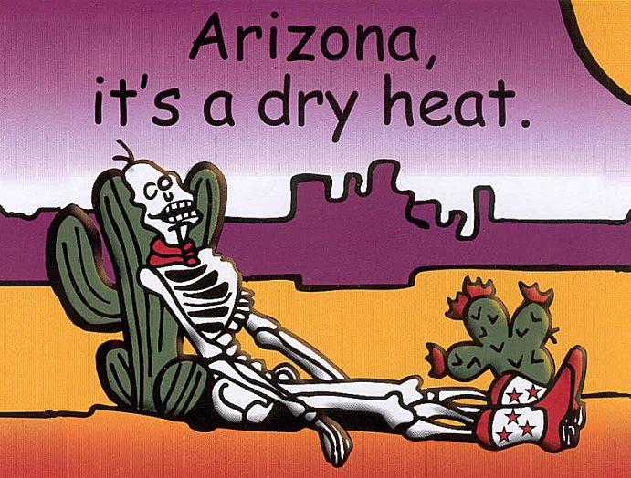
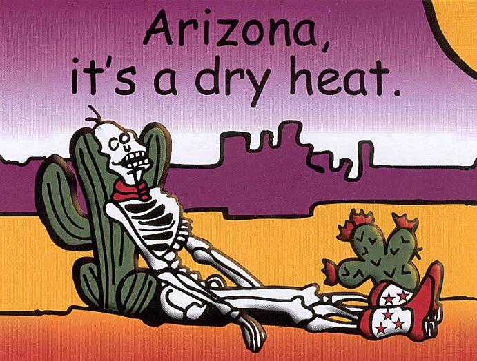

Becoming Me
Poem for My Husband
Written April 2014
Benjamin, my gentle man,the wonderful man I love, more beautiful than anyone I know of,
you are bright, caring and sweet, while marching to the beat,
of the drum of your heart, and once we had started
our path of being each other's, other-halves,
ours lives have been joined, and our love has coined,
the expression about making a confession,
that our love will always last, and your role will never be recast,
you shower me in all of the kindness of your soul, always making me feel safe and whole,
being in your arms, wallowing in your charms,
is the best feeling in the world, a feeling of being twirled,
like I'm spinning in a tunnel of bliss, fuelled by the power of your kiss,
your sweetness is all the sugar I need, fulfilling my sense greed, indeed,
your smile is an elixir that lead me quicker,
down the aisle, to permeate our domicile
with the sense of a mission, to live up to our ambitions,
challenging each other to grow, while always we will know,
the destination is an object of contemplation,
an illusion, subject to diffusion,
living in the now, and realizing how,
to work towards our dreams, without going to extremes, learning to deem,
our time united, as when we ignited,
the passion within, that has been,
in us all along, making us strong,
finally reaching our potential, because we are essential,
to one another, finally uncovering,
who we truly are, each other's north star,
your intelligence brings balance, and allows us to challenge,
what we think we know, proving it's not all just a show,
but a reality, we have in commonality,
always to be shared, so from pain we are spared,
with you I will stay, and never dismay,
about what may be, as long as you are with me
Thoughts On Life...
Pull joy out of the things you do and accomplish, never feel "if I didn't do it, somebody else would have." That is faulty logic.You are the only person who has accomplished this specific task, and got the work done. You matter.
Take ownership of your actions, in-actions, and reactions as these form who you are.
If you think something you made or did is obvious and non-original, remember by making it, you are the individual who determined what it became and all of its aspects.
There is no other you, nobody can ever replace your being. As long as you have life, you influence the world, so be conscientious of the influence you have.
Babysitting
I haven't really babysat very much, but while I was in 9th grade I would sometimes look after a little boy named Jimmy. He was 5 and I was 14.There was one night that felt right out of a movie, and every bit as fun. We had found a couple of glass jars with lids and candy corn inside, and thinking it would be fun to make music with him, we both took a jar and began to shake them and dance around the house, and making each other laugh. It only lasted about 10 minutes but it's a memory I cherish because it reminds me to live in the moment and look for opportunities of fun.
One time while watching Jimmy, I think he was just too tired, he got really cranky and began hitting me and throwing things at me. I tried calming him down, then I tried throwing some of the crayons back at him, but nothing would work he just kept being violent towards me. Since I wasn't going to really punish him, and I didn't want to keep being hit, I decided to lock myself in his room till he calmed down. Sure enough, not 5 minutes later he was crying, and I came out and hugged him and he was good for the rest of the night. I've told other people about that before and they all thought it was horrible of me, but it was completely non-violent plus completely worked, so I don't really see anything wrong with it myself. What do you think?
Tanya, Ephraim, and Roberto
Tanya, Ephraim, and Roberto, are the children of a family whose back yard adjoined to my father's back yard. I came to meet them shortly after they moved in, though not on purpose.I had met the previous residents of that house, a mother and daughter (about 3 years old) whose names I don't remember. What I do remember was being invited over to their back yard for a picnic with them. The mother asked me to try to read a book but I did not have much luck, as I was 6 years old at the time. But mostly I remember that she had cupcakes made in ice cream cones, then going in their house and the visual of the mother putting more vanilla extract into the cone. (Currently I am a fairly avid baker, and that just sounds really weird to do, but I remember how tasty it was, so who knows.) Ever since then I have wanted to make those kind of cupcakes, but for some reason I have never done this yet. The mother did mention to me that they would be moving soon, but she wasn't sure when.
A couple of months later, I decided to visit the mother and daughter again. So I cut through our back yards and knocked on the back door. It was Roberto (5 years old) and Ephraim (4 years old) who answered the door. I thought maybe the mother had taken in boarders until they moved, and so I asked them, "Is there a little girl who lives here?" Unsure of how to respond, they proceeded to ask their mom (Emma) what they should do, and relayed my question. & nbsp;I'm sure it had to have been an odd situation for their mom, to have some strange person come to the door asking for a little girl. So she came to the door and once seeing that I was a little girl myself, she let me into the house. I still can visualize the first time I entered their home. It was kind of dark, and their mom was folding laundry, but sure enough there was a little girl that they introduced me to, Tanya a 2 year old.
Over the next 3 years I became really good friends with all three of them, though mostly Roberto due to age. My brother Lance also became friends with Roberto, and our fathers became friends too.
One of our favorite activities was playing the original Zelda on Nintendo, so much in fact I don't know if I'll ever forget the way to the fairy closest to the start of the game. Another thing I will never forget is Roberto's 8th Birthday party. It was the first time I had ever seen a piñata! It was so much fun, eating burgers, candy, and cake. Once I went to visit them, and Emma was making tortillas from scratch. She let me roll out a couple and make some with her assistance. She even sent me home with a few, which my father and I added some cheese to and quickly devoured!
Emma is Mexican, but their father (David) is Caucasian. Emma decided that she wanted her children to learn to speak Spanish. At first she was going to have them speak it at home, and even teach Lance, and myself too so we could speak it with them. Later they decided instead to move to San Diego where there is a higher Hispanic population. So after knowing them for 3 years and sharing a back yard, they moved out to California and we never saw or heard from them again.
Getting Stitches
10th Grade Writing Assignment
Who knew soda cans could be so dangerous! Parents usually tell their children to wear shoes. However, I bet most people ignored this advice, and received many stubbed toes. Even though most parents teach their children not to litter, most do. If everyone would have paid attention to these pieces of parental advice, I may not have injured myself.When I was six years old, I knew a girl named Tara. When outside in a big field, Tara decided that we should attempt to start a fire by striking two rocks together for sparks. Since my mom wasn't around, I decided to take off my shoes. While looking for the rocks, I didn't watch where I was stepping. Then it happened! Stupidly, I stepped on a broken up soda can that someone threw out. It must have gotten run over by a tractor mower.
The weird thing is that at first, I didn't realize I stepped on it. Then Tara said "Your foot is bleeding." I didn't believe her until I looked at my foot and saw the blood. I remember while I walked on the grass, my foot felt funny and kind of tickled. Then some of my brothers friends walked by and saw my foot. They carried me home and knocked on my door for me.
As soon as my mom saw my foot bleeding she got a towel and wrapped it around my foot. I bled a great deal so she didn't bother to call the doctor, we just went straight to St. Elizabeths emergency. In the car on the way to the hospital, she put my foot up on the dashboard for elevation. When we finally arrived, an attendant put me in a wheelchair, so that I wouldn't have to try to walk or hop. Then they wheeled me into the emergency room. My mom stayed with me the whole time. While they put the stitches in my foot, I kept trying to see what they were doing, but they kept pushing me back down. I could only wear one shoe for a while. In school I had to have help walking by my two friends because I could only hop. Going back to my doctor to have the stitches removed, I could barely feel it and it didn't take long either.
After looking for rocks, getting carried home, going to the hospital, being only able to wear one shoe, hopping down the hall, and having the stitches taken back out, I just hope I never have to go through all of that again.
How to be a Friend
10th Grade Writing Assignment
I wrote this paper at a time when my "friends" weren't being very good to me, basically never listening to me, while using me as their counsellor.
I wrote this to try to help them out, but never showed it to them...
Soon you will know how to be a good friend.
As said in Chicken Soup for the Teenage Soul Journal "Friends are a big and very important part of your life.
They are the first ones you go to with good news, and definitely the first you call with bad news."
Since your friends are so important to you, don't you want to act as a good friend would?
To become a good or better friend, you have to listen to them, try to help them, and let them help you. Always keep in mind that no two people are the same, and no one is perfect. All you need to do this is yourself, and a friend or two, though a sense of humour is good too, for cheering them up. Remember this process may take a lifetime to perfect. Now you can begin.
First it is important to listen to them, and care, or at least pretend that you care, about what they say. Try to understand what they are telling you, if its important to them, and you don't understand, ask them to explain. When your friend tells you about an argument with another person be constructive not judgemental. Always try to see their point of view first, then help them to see the other persons point of view.
Next try to help your friends. If one of your friends tells you a problem, don't just listen and say "oh, that's too bad", help them if you can! If you don't know how to help them, say that, tell them what you think you would do, or offer advice. Telling another very close and trusted friend, and asking them for advice, or what they would do, without using names, can also be very helpful.
Lastly, let your friends help you. After listening to and helping them, let them do the same for you. Without this last step, it wouldn't be a friendship, you would just be acting as their pet. Tell them your problems, and your triumphs, while remembering if you don't then you will never really connect as friends. If you don't trust them with your secrets or problems, how will they be a good friend to you or how will they be able to trust you.
After all this explaining, I hope you learned some things. You learned to listen to your friends, to try to help them, and to let them help you. You can become a better friend today, I have faith in you!
Math
I like math because its perfect. It always has a definite answer, even when there are 2 answers. All of the other school subjects seemed wavy because the rules were never absolute and nothing is ever fully known. To every story there is another side who claims something else. For example, the rules of English are tricky because there are so many different cases that don't follow the rules, always so much to mesmerise! However, with math it was understanding that mattered not memorization, that was what I loved, how it all fit together, always in perfect symmetry. It was like a magical dance, I could just look at an equation and see the answer, seeing the distance between the numbers, and how they interlock.Working at BK
At 16 I began working at Burger King. I was in 11th grade and it was toward the end of the school year. I applied for the job in January, was hired in March, and started mid-April. It was funny they hired me, had me fill out all of the paperwork, and then never gave me a start date. I got my first day of work by skipping my school lunch period and going to BK with my friend to eat instead. While getting our food one of the managers turned to me and said, hey you were hired here right, can you start work tonight, we're a bit short staffed? So after track practice, I headed to BK to begin what turned out to be a 5 year career.One my first day I was trained on register by a girl who it was her second day. I picked everything thing up quickly as the job has been simplified as much as possible. My first couple of months were uneventful and I didn't really make any friends. This was mostly due to my being shy and not really talking to people. That all changed when we got a new manager named Steve. The first time I worked with him it was about a half hour into my shift and he walked up to from the kitchen and asked me to say hello, a little confused I complied, to which he announced "See she can speak." This was the beginning of one of my favourite friendships. Steve brought me out of my shell with his wacky sense of humour that was much like mine and also shaped me to be more like him. Steve was the type of guy who whenever he saw someone standing with locked knees would knock their knees out. He did this to me once as I was handing change to a customer through the drive thru. The problem was that the wall was right in front of me and it sent my knees quickly into the wall and I let out a loud yelp. This greatly startled the woman receiving her change as she could not see what had caused me to shout. Steve was in his early 30s and had 2 sons, he was divorced and worked at BK just to pay his child support and had a second job to live on. He showed us his pay-check a couple of time and what should have been a $600 check for 2 weeks was only $20. He floated from store to store so over my 5 years there he would work at my store for a couple of months then leave for several and then come back through the first 3 years, then he was gone.
There was about 1.5 years of time where I opened every Sunday with the same crew. That was my favourite stretch of time there, because it was only my favourite and best employees on those days. Those Sundays were so relaxing because I started at 6am the store opened at 7 and was mostly dead till about noon when the churches would get out. There were also some great regulars we saw on those mornings, there was one guy who looked like Rodney Dangerfield who would be there at open every time, and a few times on daylight savings he showed up at 6 angry we weren't open yet. My favourite customer came at 8am sharp every Saturday and Sunday, it was an old man and his wife, probably in their 80s. they got the same thing ordered the same way every time, it was: "Two number ones sausage and coffee, hold the cheese buckeye." At the window when asked if he would like cream or sugar his response was always "2,2,2 and 2". Translated this meant two sausage egg and cheese croissant meals without the cheese with coffee, and by buckeye he meant senior discount, the 2,2,2 and 2 meant two creams and two sugars for each coffee.
Will you ever love me?
Written Winter of 2007/2008 - In the friend-zone
Why do I keep falling for you, you stupid jerk, you make love work,I already got a job; I wasn't trying to be your mom,
I just wanted in your life, not trying to cause you strife,
But you act like I just don't matter; now all my hopes are shattered,
I keep letting you back in, cause I'm hoping a new trend will begin,
But I refuse to play this game; I'm starting not to feel the flame,
Hoping you won't go, I just need to know, will you ever love me?
It seems you only come to me, whenever youre needy, I can see you're just playing me,
but It's all my fault; this shit has to halt,
Liking you too much, just wanting to feel your touch,
wanting to give you my all, while you are just trying to stall
But every time you go, it feels like the snow,
I just get so cold, it's you I wanna hold
Hoping you won't go, I just need to know, will you ever love me?
Slowly I get back to myself; I regain my mental health,
Then you come back out of nowhere, acting like my life you wanna share,
But I can't trust that you'll stay, you may be gone after today,
Maybe I should just close the door, but you were all I hoped for,
Hoping you won't go, I just need to know, will you ever love me?
It's like destiny just wants us to be, even my friends tell me, that it's with you I should be,
But you're never around, and it's got me feeling down,
Maybe I should just call, but I'm up against a wall,
Cause I don't want to bug you, but I really want to hug you,
Hoping you won't go, I just need to know, will you ever love me?
It should be more easy, it doesn't take much to please me,
I don't need you 24/7, but I'd like to see you before 11,
You keep calling me at night, saying how you wanna do right, but I ain't got all night,
to be sitting around waiting on you, I got better shit to do,
I have a life too, and I'm good without you,
But don't misunderstand; I do want you for my man,
Hoping you won't go, I just need to know, will you ever love me?
I'm so split in half; I love how you make me laugh,
I don't know what to do, because I feel lost without you,
I just keep going back and forth, wanting to feel you warmth
But I can't wait forever, to begin this endeavour,
I don't have time to waste, you need to pick up your pace,
Hoping you won't go, I just need to know, will you ever love me?
I'm caught between what I know to be true and hesitations over you,
I know you're worth the trouble, please don't burst my bubble
Maybe my illusion of you, is simply a delusion thought to be true,
I'm not sure; I think you're the only cure,
To all my lonely nights, I just need to be held tight,
I don't know what to do, so I'm just going to call you,
I need to be definite, because I thought you were heaven sent
Hoping you won't go, I just need to know, will you ever love me?
The Woods
When I was a child I spent most of my time in the woods. I loved the feeling of being surrounded by trees; it made me feel as though all the people who were pestering me, along with everyone currently living, were every bit as irrelevant as me. I felt this way because each person lives such a small amount of time on this planet, but the earth has been here long before, and will go on long after all of us. I was one of those people you see in movies who stretch out their arms and twirl with happiness at the feeling of it all.Now I live in Arizona, in the Phoenix area, and there are tree's here but they're scarce and there are no woods that I have seen. I really miss that feeling. I miss being able to go to parks filled with trees blocking out the sun; cacti just don't have the same effect.
I always found it fun to vein the leaves of oak trees, it was one of my favourite activities, any time passing an oak I would be sure to grab a leaf to vein. Veining a leaf is simply pulling off the filling between veins.
However the woods of my past weren't all fun, I have been in quicksand twice. The first time it was my best friend Michelle and I walking a path, we went a bit farther than usual, and I stepped on a spot that looked a bit muddy but then my foot began to sink. When I tried to use my other leg to pull it out that leg was pulled into the muck also. The first time I only sunk to just below my knees before Michelle was able to pull me out. So my mother wouldn't find out about it, I went to Michelle's house and rinsed off my pants and shoes before heading home to change.
The second time we had more people with us, it was Michelle, Arin and Arianne (identical twins), Nicole, and myself. On the trail there was only one tree that was covered with Caterpillars and we always said that they were the rare poisonous ones, I never looked into if that was true or not, but I kind of suspect not. Anyway when walking past that tree one of the Caterpillars got on me, it was black with red and yellow spots along its back. Nothing happened with it, I just pulled it off and threw it, but it was less than 5 minutes later that I was back in quicksand again. This time I sunk all the way to my waist, and it took all 4 of them to pull me out. This time to hide this from my mother I just threw out my pants, I was only about 8 years old at the time and simply took my pants off on the back patio, threw them in the garbage bin then hurried into the house and up to my room.
The Playground
Probably even to this day I have spent more time at the playground by my childhood home than anywhere else in the world. Growing up I lived at the playground, wanting to always be outside with other kids.Any time I have ever needed peaceful time to myself to think and find some simple happiness, all I needed to so was find a swing-set and peace would follow. Every summer when the swings would be hung at the playground near my home all the kids would wait in lines to get to swing. To avoid the lines me and Michelle would wake up at 7am and go to the swings. That was how I started my day in the summer every year until that playground equipment was torn down to make room for a new safer playground of plastic slides and mulch. I would wake up and go to the swings and be there all alone till Michelle eventually came out and joined me. A favourite activity with the swings was playing what we called Mario. Basically we would make all of the swings go at different paces with nobody on them then we would run through from one side to the other trying to avoid getting hit. We named it for Mario because you were supposed to pretend that if you made it through without getting hit you saved the princess.
However, for a while it was the merry-go-round that I loved. Spinning in circles is one of my favourite past times, and I have been known for it. But the reason I really became attached to the merry-go-round was that it was a meeting place for all of the neighbourhood kids. It was nice, any-time I felt lonely I would just go to the merry-go-round and within 10 minutes someone would come to play with. I was 11 years old when they changed the playground to the safer equipment and it was never the same after that.
I did get some enjoyment out of the "safe" playground. When in 8th and 9th grade My friend Samantha and I would play the tic-tac-toe pretty often just as something to do as we chatted. But after that I was really too old to go to the playground and most of the people I knew had moved away so the only people using the playground were strangers.
First Grade
I remember the first grade quite well. In my class was around 20 students, most of whom I would continue to see for the rest of my school years. Our class was split into two reading groups, one more advanced than the other. I was in the less advanced group, and with me was a boy named Terry. This boy smelled horribly every day, the smell was similar to that of green bean casserole while it's cooking. It was a shame that he should make me hate the smell so much because my mother was known for her green bean casserole and was requested to make it quite often. Whenever she would do this I needed to leave the house as the smell would make me nauseous. I love green beans but have never tried them in casserole form – partially due to the smell and partly due to my dislike of onions.In first grade we also did show and tell. I decided to bring in a Barbie that my grandfather had recently bought me. I received this doll as compensation for being too young to go to Florida over the summer with him as my older brothers did. It was the Totally Hair Barbie the most popular one that year as she had hair down to her feet. After school while getting ready to go, one of my classmates named Justine asked to borrow it because she wanted to show her mom which Barbie she wanted. I never got it back. I asked the girl several times throughout the year when she would bring it back and she always said tomorrow, then on the second to last day of school she finally admitted that she never intended on giving it back. This taught me to never lend out anything that I wasn’t willing to to lose forever.
Both Terry and Justine were never seen again after that year. There was one more person that year I remember but only saw once after that, and her name was Karen. She was really nice and fun, but that and what she looks like is mostly all that I remember of her. I did see her once after the end of First Grade, it was while in the car with Michelle, we saw her in a parking lot while waiting in the car for Michelle's mom while she went in a store. We immediately recognized her and called her over to chat, she came over and we had a nice conversation, but that was the last of her.
Lonely Again
Written Winter of 2007/2008
Here I am sitting here lonely again,Where did everyone go, It's like my friends don't wanna show,
But I'm not feeling them anyway, my life feels so gray, I just need a new day,
I'd like to have fun, but down is the sun
And the weather is bad; it just makes me so sad
I feel like I did nothing today, and my life is wasting away,
There are so many things I'd like to do, you just don't have a clue
But it makes me depressed, and I'm feeling really stressed
Thinking where to begin, my head starts to spin,
All the possibilities gone wrong, the day seems so long
Like morning will never come, and I feel like a bum
I'm feeling so lost, but what will be the cost,
Is it with my hopes I will have to pay, to make things okay?
They say life always changes and no one stays the same, but is someone to blame?
Maybe it's cause and effect, or just in respect
to things happening in the world, making people feel twirled,
all twisted inside, and like they just died
I don't know what to do, to make things brand new,
I just want to make this pain go away, and lose my dismay
But I'm so alone; I just sit by the phone
Hoping it will ring, and put my life on the upswing
But here I am, sitting here lonely again
Flat Mikaylah - Letter 1
March 29, 2013
Hi Mikaylah,Today Flat Mikaylah and I had a great time! I brought her with me to a book club meeting discussing the book Wicked. If you've seen The Wizard of Oz, then you will be familiar with the Wicked Witch of the West, this book tells her story before Dorothy came to Oz.
A book club is a group of people who all read the same book then get together to discuss it. What I like about book clubs is the opportunity to read books that I may not have picked out myself, and discussing those books with wonderful friends! Reading is one of my favorite activities, I love getting to experience new places and times through books.
The meeting took place at The Farm at South Mountain in Phoenix, Arizona. The Farm has a nice restaurant that serves sandwiches, salads and desserts. They have a bunch of picnic tables surrounded by Pecan Trees. Since we already had a healthy breakfast at home, Flat Mikaylah and I split a yummy chocolate cupcake!
Sincerely,
Lily and Flat Mikaylah
Flat Mikaylah - Letter 2
April 6, 2013
Dear Mikaylah,

This has been an exciting day for Flat Mikaylah and me.
We spent today at the Tempe Festival of the Arts.
Tempe is known for Mill Avenue, with its shops, bars, restaurants, Tempe Town Lake and Tempe Beach Park, and, of course, Arizona State University.

Twice each year the streets of downtown Tempe, Arizona are closed off to all vehicles and opened up to pedestrians for the Tempe Festival of the Arts.
It is consistently one of the largest arts and entertainment festivals in the Southwest, drawing nearly half a million people to the award-winning event.
Exhibitors may only show hand-made works of art or products, and must represent their own work at the festival.

Flat Mikaylah and I spent the day helping out Maryann Hamel, an artist who works with copper to make Christmas ornaments, wind chimes, wind spinners, and more.
We took pictures with both the Wind Chimes and Wind Spinners.
Well Flat Mikaylah and I are off to have more adventures!
We'll write again soon!
~Lily and Flat Mikaylah
April 6, 2013
Dear Mikaylah,
This has been an exciting day for Flat Mikaylah and me. We spent today at the Tempe Festival of the Arts. Tempe is known for Mill Avenue, with its shops, bars, restaurants, Tempe Town Lake and Tempe Beach Park, and, of course, Arizona State University.
Twice each year the streets of downtown Tempe, Arizona are closed off to all vehicles and opened up to pedestrians for the Tempe Festival of the Arts. It is consistently one of the largest arts and entertainment festivals in the Southwest, drawing nearly half a million people to the award-winning event.
Exhibitors may only show hand-made works of art or products, and must represent their own work at the festival.
Flat Mikaylah and I spent the day helping out Maryann Hamel, an artist who works with copper to make Christmas ornaments, wind chimes, wind spinners, and more. We took pictures with both the Wind Chimes and Wind Spinners.
Well Flat Mikaylah and I are off to have more adventures!
We'll write again soon!
~Lily and Flat Mikaylah
Flat Mikaylah - Letter 3
April 7, 2013
Dear Mikaylah,
Today Flat Mikaylah, Ben, and I visited the Chandler Solar System Walk at Veteran's Oasis Park.
The walk is a half mile long and goes around a lake.
April 7, 2013
Dear Mikaylah,Today Flat Mikaylah, Ben, and I visited the Chandler Solar System Walk at Veteran's Oasis Park. The walk is a half mile long and goes around a lake.
| Lily and Flat Mikaylah starting the walk |
| Ben at Mars |
The Chandler Solar System Walk is a scale representation of the sun, planets and other objects in the known solar system, shrunk down to fit within the confines of Veterans Oasis Park.
In this scale model, the sun is only 7 inches wide, Earth is about 1/10th of an inch wide, the largest planet Jupiter is about 3/4 of an inch wide, and the dwarf planet Pluto is much smaller than the tiny period at the end of this sentence. Each foot traveled along the 2,500-foot pathway is relative to 1.5 million miles in space.
Veterans Oasis Park in Chandler is an important part of the Chandler's reclaimed water processing where treated wastewater is redistributed to recharge basins in the area. That gave the city the opportunity to develop the park as a wetland habitat to share with the community.
Sincerely,
Lily, Ben, and Flat Mikaylah
Flat Mikaylah - Letter 4
April 9, 2013
April 9, 2013
| Lily and Flat Mikaylah at the Desert Botanical Garden |
| Cactus growing over a tree |
| Inside the cactus under all of the needles is wood! |
| This dead cacuts has nothing left but its wooden bones! |
| Some cacti can grow to 40-50 feet! |
| Ben and Carolina Escobar sculpture |
| Carolina Escobar sculpture |
| Carolina Escobar sculpture |
| Carolina Escobar sculpture |
| Four Seasons |
Since the last time we wrote Flat Mikaylah, Ben, and I visited the Desert Botanical Garden located in Tempe Arizona!
Founded in 1938, the Desert Botanical Garden is the world's only botanical garden whose original mission was to focus solely on desert plants. Today, it holds one of the world's finest collections of cacti, succulents and other desert flora.
There was so much neat stuff to see there, we took lots of pictures!!
Throughout the garden were a few art sculptures.
Carolina Escobar created an exhibit called Whispers of a New World. These sculptures were weird, contemporary art. Escobar works with steel framing to create shapes that play off of the plant life in the garden.
Also on display was a set of four 15-foot fiberglass sculptures created by American artist and film-maker Philip Haas. The giant heads were inspired by Giuseppe Arcimboldo's renaissance paintings of the four seasons, comprising Spring, Summer, Autumn and Winter.
The colossal figures are created with flowers, ivy, moss, fungi, vegetables, fruit, trees, bark, branches, and twigs. They are organized to create four human portraits, each representing one of the four seasons.
~Lily and Flat Mikaylah
Flat Mikaylah - Letter 5
April 24, 2013
Dear Mikaylah,
Before sending Flat Mikaylah home to you, I wanted to share a bit about the city of Chandler Arizona where I live and she has been staying.
The weather has been great with temperatures this time of year mostly in the 80's.
This is much warmer than Youngstown where the temperatures varied throughout the month between 40-70 degrees.

Chandler, Arizona was named for a veterinarian, Dr. A. J. Chandler, who settled in the area in 1891.
The town of Chandler began in 1912, with the opening of the Hotel San Marcos in 1913.
The San Marcos Resort and Spa is the oldest golf resort in Arizona, and is located in historic downtown Chandler, adjacent to Dr. A. J. Chandler Park, where many of Chandler's special events are held.
Between 1990 and 2000, Chandler was the 7th fastest growing city in the United States of those with a population more than 100,000.
The population of Chandler is 240,595.
That makes it the 5th largest city in Arizona.
Percentage of people under 5 years old: 7.8%
On this map you can see Chandler in the orange section near the bottom.
You can also see some of the other towns Flat Mikaylah and I have visited, like Tempe and Phoenix.
I enjoyed having Flat Mikaylah here for her stay, we did many fun things, and learned along the way.
Hopefully someday you'll be able to come and visit too!
Sincerely,
Lily
April 24, 2013
Dear Mikaylah,Before sending Flat Mikaylah home to you, I wanted to share a bit about the city of Chandler Arizona where I live and she has been staying.
The weather has been great with temperatures this time of year mostly in the 80's. This is much warmer than Youngstown where the temperatures varied throughout the month between 40-70 degrees. 
Chandler, Arizona was named for a veterinarian, Dr. A. J. Chandler, who settled in the area in 1891. The town of Chandler began in 1912, with the opening of the Hotel San Marcos in 1913. The San Marcos Resort and Spa is the oldest golf resort in Arizona, and is located in historic downtown Chandler, adjacent to Dr. A. J. Chandler Park, where many of Chandler's special events are held.
Between 1990 and 2000, Chandler was the 7th fastest growing city in the United States of those with a population more than 100,000. The population of Chandler is 240,595. That makes it the 5th largest city in Arizona.
Percentage of people under 5 years old: 7.8%
On this map you can see Chandler in the orange section near the bottom. You can also see some of the other towns Flat Mikaylah and I have visited, like Tempe and Phoenix.
I enjoyed having Flat Mikaylah here for her stay, we did many fun things, and learned along the way. Hopefully someday you'll be able to come and visit too!
Sincerely,
Lily